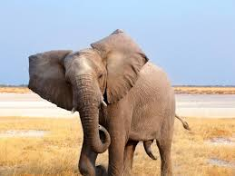

Panda

El panda, oso panda o panda gigante (Ailuropoda melanoleuca) es una especie de mamífero del orden de los carnívoros y aunque hay una gran controversia al respecto, los últimos estudios de su ADN lo engloban entre los miembros de la familia de los osos (Ursidae), siendo el oso de anteojos su pariente más cercano.
Tigre

El tigre (Panthera tigris) es una de las cuatro especies de la subfamilia de los panterinos (familia Felidae) pertenecientes al género Panthera. Se encuentra solamente en el continente asiático; es un predador carnívoro y es la especie de félido más grande del mundo junto con el león pudiendo alcanzar ambos un tamaño comparable al de los fósiles de félidos de mayor tamaño.
Elefante

Los elefantes o elefántidos (Elephantidae) son una familia de mamíferos placentarios del orden Proboscidea. Antiguamente se clasificaban, junto con otros mamíferos de piel gruesa, en el orden, ahora inválido, de los paquidermos (Pachydermata). Existen hoy en día tres especies y diversas subespecies. Entre los géneros extintos de esta familia destacan los mamuts.
Estado de Mexico-chalco-colonia Agrarista